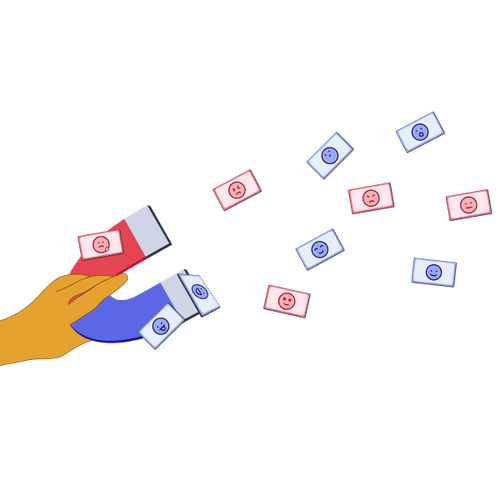

Mit der Academy erhaltet ihr im Business-Plan praxisnahe Lernmodule rund um Facilitation und wirksame Transformation.
Gemeinsam mit 9 Spaces zeigt Plan International Deutschland, wie wertebasiertes Arbeiten Orientierung gibt – nach innen wie nach außen.

Dieses Tool hilft eurem Team dabei, einen guten Umgang mit Emotionen für eine noch bessere Zusammenarbeit zu finden.
Dieses Tool hilft dir, emotionale Reaktionen bewusst wahrzunehmen und als Ressource in Entscheidungsprozesse zu integrieren.
Mit dieser Gruppenübung legt ihr im Team offen, welche Bedürfnisse in eurem Job wie stark erfüllt sind.
Dieses Tool hilft euch dabei, eure Kolleg*innen besser zu verstehen und gezielt Wertschätzung für sie auszudrücken.